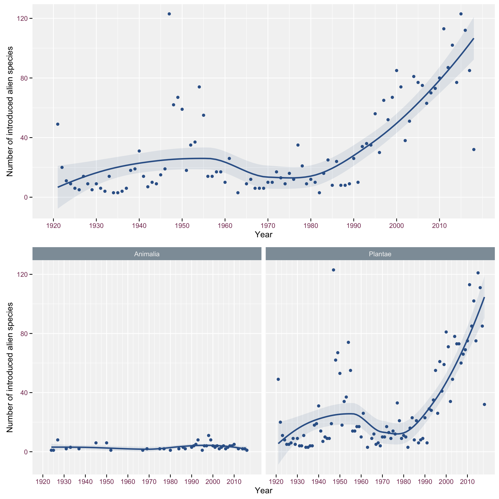

This document describes how to build indicators of Invasive Alien Species based on checklist data. In particular, this document takes into account:
Install trias package:
devtools::install_github("trias-project/trias")Load libraries:
# Tidyverse packages
library(tidyr)
library(tidyverse)
library(dplyr)
library(magrittr)
library(stringr)
library(readr)
# GBIF related packages
library(rgbif)
# project package
library(trias)
# INBO theme package
library(INBOtheme)
# other packages
library(lazyeval)
library(assertthat)
library(assertable)
library(egg)# Get data
data <- read_tsv("../data/interim/test_data_output_checklist_indicators.tsv")New functions should be written in trias official project package.
In order to not consider subspecies, please take care of grouping by species (see point 8 of #21).
See GitHub issue #17.
Create function to visualize yearly introduction evolution
# Create function
#' Create year of introduction based Trias indicator
#'
#' @param data df, as created by preprocessing
#' @param start_year_plot Start year to show the plot, as initial years are
#' mostly irrelevant
#' @param smooth_span Parameter for the applied Loess smoother, for more
#' information on the appropriate value, see...
#' @param x_scale_stepsize Parameter that indicates the stepsize of the x axis
#' @param facet_column NULL | char The column to use to create additional
#' facet wrap plots underneath the main graph. When NULL, no facet graph is
#' included.
#'
#' @return ggplot
#' @export
#'
#' @importFrom assertthat assert_that
#' @importFrom assertable assert_colnames
#' @importFrom dplyr %>% filter group_by group_by_ count ungroup
#' @importFrom ggplot2 geom_point aes xlab ylab scale_x_continuous facet_wrap
#' geom_smooth
#' @importFrom INBOtheme theme_inbo
#' @importFrom egg ggarrange
#'
#' @examples
#' indicator_introduction_year(data)
#' indicator_introduction_year(data, start_year_plot = 1940,
#' smooth_span = 0.6)
indicator_introduction_year <- function(df, start_year_plot = 1920,
smooth_span = .85,
x_major_scale_stepsize = 10,
x_minor_scale_stepsize = 5,
facet_column = NULL) {
# initial input checks
assert_that(is.data.frame(df))
assert_colnames(df, c("first_observed"), only_colnames = FALSE)
# first filtering of the incoming data
data <- df %>%
filter(!is.na(.data$first_observed)) %>%
filter(.data$first_observed > start_year_plot)
data_top_graph <- data %>%
group_by(.data$first_observed) %>%
count() %>%
ungroup()
# top graph with all counts
top_graph <- ggplot(data_top_graph, aes(x = first_observed, y = n)) +
geom_point(stat = 'identity') +
geom_smooth(span = smooth_span) +
xlab("Year") +
ylab("Number of introduced alien species") +
scale_x_continuous(breaks = seq(start_year_plot,
max(data_top_graph$first_observed),
x_major_scale_stepsize),
limits = c(start_year_plot,
max(data_top_graph$first_observed))) +
theme_inbo()
if (is.null(facet_column)) {
return(top_graph)
} else {
# check for valid facet options
valid_facet_options <- c("family", "order", "class", "phylum",
"kingdom", "pathway_level1", "locality",
"native_range")
facet_column <- match.arg(facet_column, valid_facet_options)
data_facet_graph <- data %>%
group_by_("first_observed", facet_column) %>%
count() %>%
ungroup()
facet_graph <- ggplot(data_facet_graph, aes(x = first_observed, y = n)) +
geom_point(stat = 'identity') +
geom_smooth(span = smooth_span) +
facet_wrap(facet_column) +
xlab("Year") +
ylab("Number of introduced alien species") +
scale_x_continuous(breaks = seq(start_year_plot,
max(data_facet_graph$first_observed),
x_major_scale_stepsize),
minor_breaks = seq(start_year_plot,
max(data_facet_graph$first_observed),
x_minor_scale_stepsize),
limits = c(start_year_plot,
max(data_facet_graph$first_observed))) +
theme_inbo()
ggarrange(top_graph, facet_graph)
}
}Set start_year and loess_span if you want Specify this in the function so the function knows that it shouldn’t use the default settings (that were specified above)
# Example
start_year_plot <- 1920
loess_span <- .85
x_major_scale_stepsize <- 10
x_minor_scale_stepsize <- 2.5
indicator_introduction_year(data, start_year_plot = start_year_plot,
smooth_span = loess_span,
x_major_scale_stepsize = x_major_scale_stepsize,
x_minor_scale_stepsize = x_minor_scale_stepsize,
facet_column = "kingdom")## [1] "All column names present"